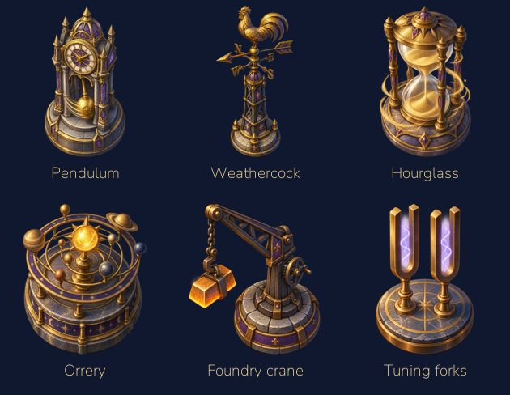

Epic towers
The six epic towers that open after the first Toll: pendulums, planets, cranes, tuning forks, sand and a vane for fliers.

On this page
Warning This page describes towers that open after you stop the first Toll at wave 120. Skip it if you would rather discover them yourself.
Epic towers are big, bold and individual. Each has its own way of working: a great swinging arc, planets in orbit, a load dropped on a crowd. No more than two may stand on the field at once.
| Tower | Family | Cost | Damage | Strikes per second | Reach | Opens at best wave |
|---|---|---|---|---|---|---|
| Pendulum | Weight | 300 | 40 | 0.4 | 2.0 | 121 |
| Weathercock | Air | 220 | 60 | 1.0 | 3.2 | 125 |
| Hourglass | Time | 240 | none | n/a | 2.4 | 130 |
| Orrery | Light | 300 | 12 | 2.0 | 1.6 | 140 |
| Foundry crane | Weight | 320 | 90 | 0.25 | 3.0 | 150 |
| Tuning forks | Bell | 260 | 8 | 4.0 | 3.5 | 160 |
Some Trials open an epic early: Common Stock opens the Weathercock, Fog Day the Hourglass, Lean Valley the Foundry crane, Iron Hour the Pendulum and Short Day the Orrery.
Pendulum
A great pendulum sweeps everything on the ground around it. It cannot reach fliers.
- Long Swing: sweeps a circle half as wide again.
- Wrecking Ball: hits nearly twice as hard and stops what it hits for a moment.
Weathercock
A tall vane that turns to face fliers and knocks them back out of the air. It leaves the ground to others. This is the specialist for flocks of Gliders.
- Storm Vane: knocks two fliers at once.
- Iron Rooster: strikes wind-ups on the ground too, at full strength.
Hourglass
Its sand slows everything in a wide circle, more the longer they stay in it. It cannot slow fliers.
- Sandstorm: its sand spreads half as far again.
- Still Sand: slows them much further the longer they stay.
Orrery
Brass planets orbit it and strike whatever they pass. It cannot reach fliers.
- Grand Orrery: five planets instead of three.
- Sun Orrery: its planets burn, so what they strike takes more from every tower.
Foundry crane
Drops a heavy load on the thickest crowd in reach. It cannot reach fliers.
- Gantry: two jibs, dropping half as often again.
- White-hot Ingot: a wider blast that stops everything it lands on.
Tuning forks
A humming beam joins it to the nearest Bell tower: everything that crosses the beam is hurt, fliers too. Build it near a Bell-family tower such as a Clapper, a Chime post or a Gong, and plan where the beam falls: it only pays when wind-ups walk through it.
- Concert Pitch: its beam hurts twice as much.
- Harmonic: its beam rings what it crosses, so they take more from every tower.
Choosing two
A good pair is one tower that handles the crowd (Pendulum, Foundry crane or Tuning forks) and one specialist (Hourglass to slow, Weathercock for fliers). See Tower pairings and Tips for deep waves. The next step up is Legendary, Mythic and Exalted.